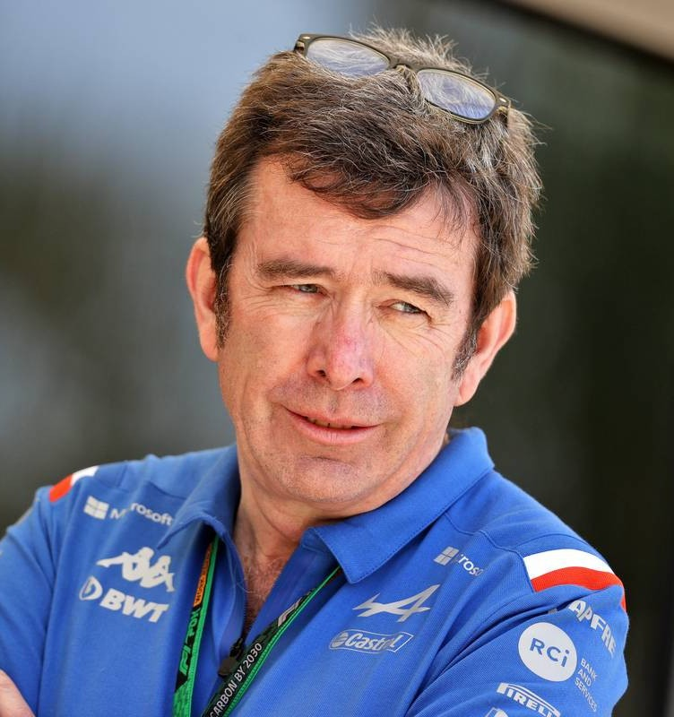
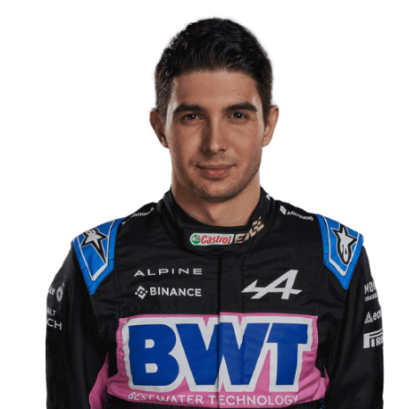
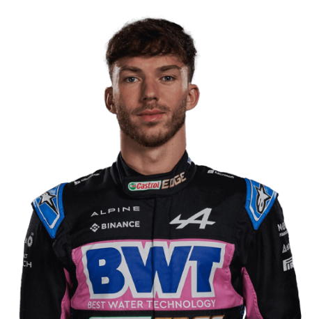

Team
Meet the team.
Team Principal

Bruno Famino
Drivers

Esteban Ocon

Piere Gasly

Meet the team.
Bruno Famino
Esteban Ocon
Piere Gasly
Prost and Arnoux took four wins in the 1982 season, with the former finishing fourth in the standings - 10 points behind World Champion Keke Rosberg - while Renault finished third. Arnoux left for Ferrari in 1983, but Prost remained and had his best season to date, winning four races while battling with Brabham's Nelson Piquet for the World Championship.
Unfortunately, financial problems hit the team as Renault could no longer justify the large fees needed to operate. As a result, CEO Georges Besse scaled down the company's Formula 1 involvement from full team to just engine supplier for the 1986 season, and then went entirely out of F1 at the end of the year.
Renault purchased Benetton Formula Limited for $120 million in March 2000, marking the French manufacturer's return to the F1 grid. Benetton started as Toleman Motorsport in 1981 before being bought and renamed by Benetton Formula in 1986, having being purchased by the Benetton family. The team moved to Enstone from Witney, Oxfordshire in 1992/93.
Giancarlo Fisichella took over as Alonso's teammate in 2005, winning the opening race of the season in Australia after rain affected the qualifying session. However, it was the Alonso who really triumphed during the year, winning the following three races. Although Kimi Raikkonen and McLaren battled back against reliability woes to make the championship battle interesting, Alonso secured the Drivers' Championship in Brazil. Renault clinched the Constructors' title at the following race in China, ending Ferrari's winning run of six years. It was also the first time that Renault had won the title as a manufacturer, along with them being the second French constructor after Matra in 1969 to take top spot.
Both drivers returned for the 2006 season, with Alonso winning the season-opening Bahrain Grand Prix. He also claimed victory in Australia, while coming home second in Malaysia behind Fisichella for Renault's first 1-2 finish since Arnoux and Prost in 1982. Alonso took four consecutive wins midway through the season to hold a healthy lead in the standings. However, Ferrari and Michael Schumacher answered back with three straight victories. Both drivers entered the final two races level on points, but it was Alonso who came out on top after taking the chequered flag in Japan, while Schumacher retired with an engine failure. The Spaniard then clinched the title with a second-place finish in Brazil, a result that also helped Renault to clinch the Constructors' Championship.
Fisichella remained at Renault in 2007 whilst Alonso left for McLaren, with Heikki Kovalainen stepping in for the Spaniard. The team failed to hit the heights of the previous two years, despite finishing the season third in the standings. Renault's best result came near the end of the campaign when Kovalainen finished the Japanese Grand Prix in second spot, marking their only podium of the year. At the end of 2007, the FIA accused Renault of possessing confidential information relating to McLaren's cars, and they were charged with breaching article 151 (c) of the Sporting Regulations. Those charges were the same faced by McLaren earlier in the year regarding the Spygate scandal. Renault were not penalised over the matter.
Renault announced that a takeover transaction was being discussed for the Lotus F1 Team ahead of the 2016 season. The R.S.16 was driven by Kevin Magnussen and Jolyon Palmer, with Esteban Ocon serving as reserve driver, and the team ended the year in ninth place with eight points. Frederic Vasseur left his post as Team Principal at the conclusion of the season following disagreements with team personnel, and Cyril Abiteboul became Managing Director.
In September 2020, Groupe Renault announced that their works team's new name for 2021 would be Alpine, in an attempt to promote the Alpine marque.
Ocon and Alonso continued with the team for 2022, with Ocon continuing on a multi-year contract with the team, and Alonso still looking to remain in the sport for as long as possible. Ahead of the 2022 season, Alpine underwent personnel changes, with Alain Prost departing from his role of Non-Executive Director, and Marcin Budkowski will leaving his position of Executive Director.Alpine eventually secured P4, and their best result came at the Japanese GP, where Ocon and Alonso finished fourth and seventh, with the latter enjoying a fantastic last-lap duel with the retiring Vettel.
2005, 2006
Fernando Alonso X2(2005, 2006)